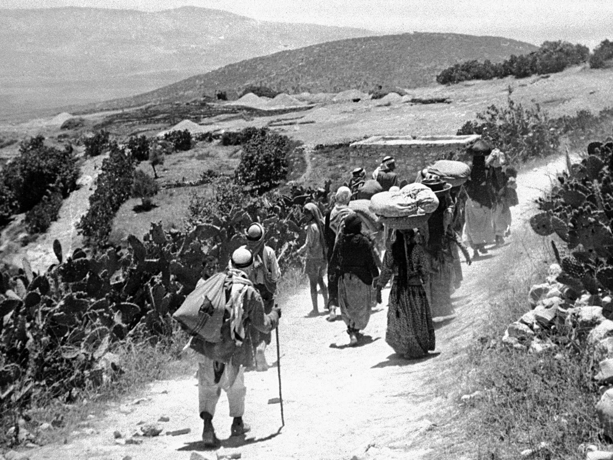
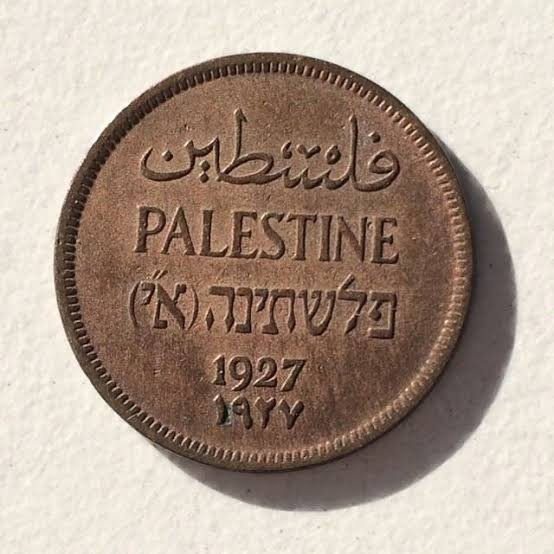
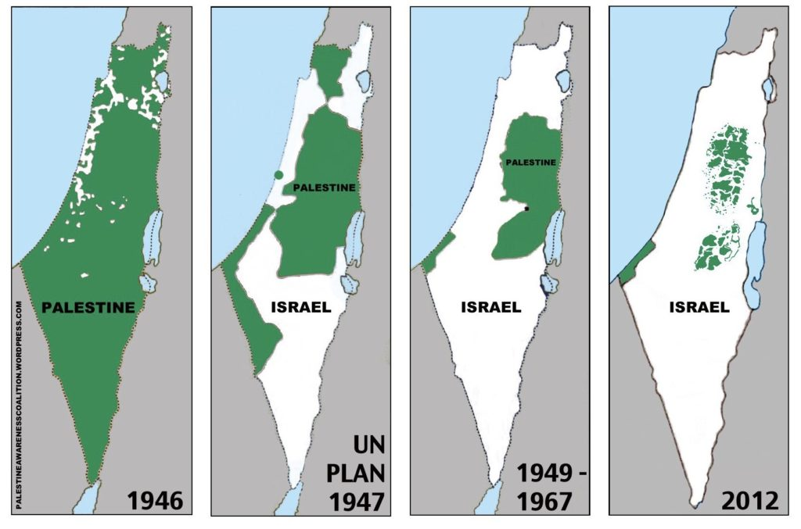
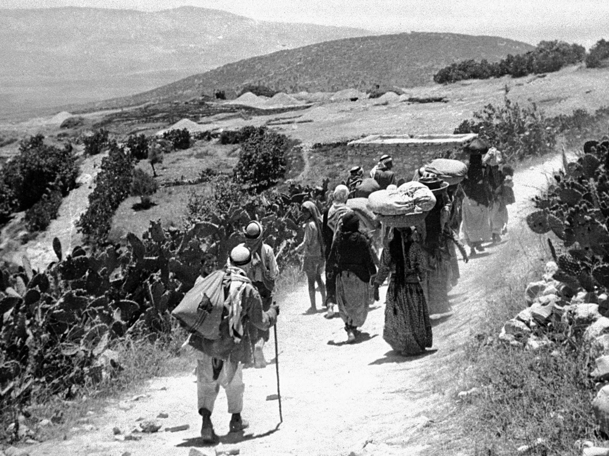
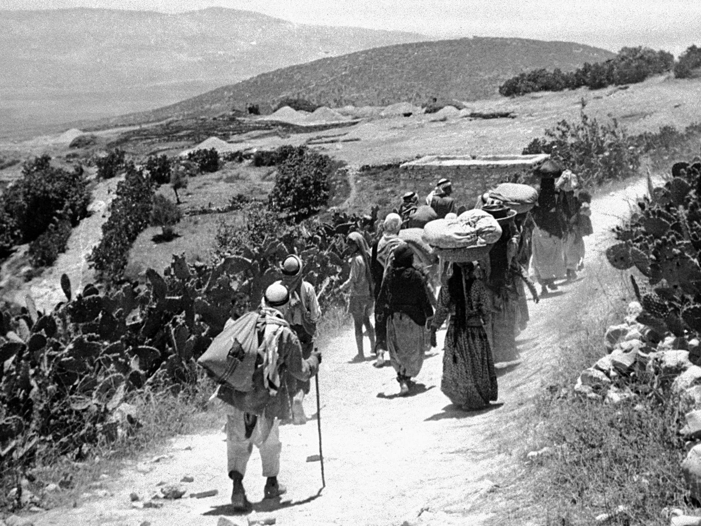

Wat is het verhaal van Palestina? Hoe is Israël begonnen? En wat zal er in de toekomst gebeuren?

Volgens het Palestijnse persbureau en informatieagentschap wordt in de registers van de Raveed en het noorden van Syrië bevestigd dat de naam "Amorou"
werd genoemd in het derde millennium voor Christus. De betekenis van de naam is "het westelijke land". Palestina kreeg zijn naam in de 18e eeuw voor Christus
en heeft door de eeuwen heen verschillende beschavingen gezien, zoals het Perzische rijk, het Romeinse rijk, de islamitische kalifaten, de Kruisvaarders en anderen.
Palestina herbergt de op een na oudste stad in de geschiedenis, Jericho, met overblijfselen die teruggaan tot 11000 voor Christus.
Nu, na deze informatie over Palestina, gaan we kijken naar hoe Israël Palestina is binnengekomen.

Een oude munt van de staat Palestina
Er was een land in de Middellandse Zee
dat Palestina heette. Na de Tweede Wereldoorlog
nam Groot-Brittannië de controle over een aantal landen over, waaronder Palestina, maar we zullen de kwestie van de rest van de landen niet bespreken. Ons doel is Palestina. Groot-Brittannië gaf de staat aan Israël, en vanaf hier begon de Israëlische
expansie elk jaar totdat we bereikten waar we nu zijn

Welnu, wat zal er in de toekomst in Israël gebeuren?
Welnu,
Israël is bang voor een gebeurtenis die
de vloek van het achtste decennium wordt genoemd.
Omdat Israël geen acht decennia heeft bestaan
toen het verenigd was, gebeurde dit incident twee keer,
en nu naderen we het achtste decennium,
dus is het land bang voor zijn verdwijning.
 
